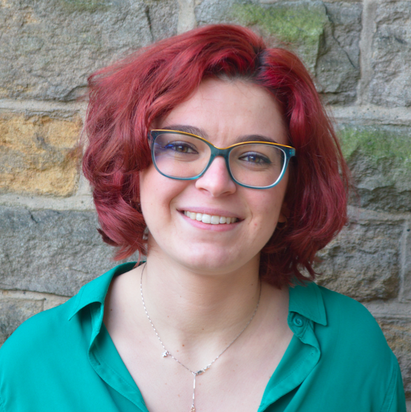

Monte4Edu
Bottom-Up Change for Quality Education

Vote Giulia Montefiore for Academic Affairs Officer!
What students really need to drive a cultural change towards quality education at Durham is a passionate representative willing to stand up for students’ ideas, ready to develop implementable changes and be in constant dialogue with her peers.
I am a final year student from Italy and I undertook a Year Abroad studying in France last year. Being part of international projects in Turkey, Poland and Norway enlarged my understanding of different higher education systems and of what quality education means cross-country.
I am Course Rep, Department Rep and Faculty Rep for Social Sciences and Health, and part of the Education Committee at the Students’ Union; as a Combined Honours student in Politics and Economics I am always exposed to different departments. I was Environment Officer in Hild Bede College Exec during my second year, and part of the Union Governance Committee in my first.
If we, the students, get lecturers and researchers to buy into our ideas, we can start implementing change NOW, thereby gaining all the means to bring our vision all the way up to the highest University levels. I have ideas and ways to realise them. If you believe in Bottom-Up Change for Quality Education, vote Monte!
Follow me on Facebook and Twitter!
Voting open from 16th until 19th February at 17.00! Vote at durhamsu.com.
10 Policies for Bottom-Up Change for Quality Education
-
Multiple and Continuous Assessment Methods: we need less pressure on a few hours of exams, and more value to the work we do during the year and the skills we develop through it.
-
Erasmus+ and Exchanges Programmes Accessible for All: everybody should have the choice of keeping their degree to 3 years instead of pushing it to 4.
-
Feedback for All: meaningful feedback is key for improvement, yet too many students are deprived of it for their formatives, summatives and exams.
-
Improve Learning and Teaching methods: let’s study what UK and international institutions with outstanding teaching do, develop change proposals and enter a dialogue with departments to implement world leading teaching. All student-led, all bottom-up.
- Cut extra-course costs:
- Cheaper printing
- Purely online submission for essays and projects
- More online material.
-
Student Discussion Groups in each department: they enable better analysis of problems than questionnaires and are a successful reality in other UK universities.
-
A real place to eat your own food: the Science Site marquee should be put up, equipped with microwaves, until a real solution for students to eat healthily every day has been found. A homemade cold lunch on the floor vs a paid-for hot meal at YUM is not an acceptable dilemma.
-
Zero Errors in Exam Papers: every year errors heavily disrupt exams. We must lobby the University for more rigorous exam-scripts checking.
-
Better Timetabling: the most popular combinations of modules should be accounted for. Stop missing part of the next class because you need to be on the opposite side of town in 10 minutes, but can’t fly.
- More Versatile and user-friendly DUO in a Library open until 2 a.m. when not on 24/7 period.